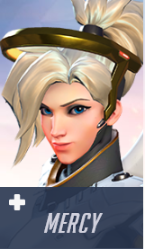
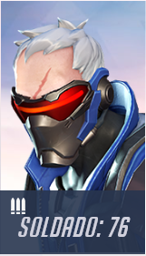
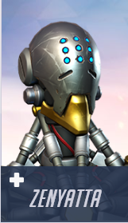

Overwatch es un variopinto shooter por equipos que cuenta con un diverso reparto de poderosos héroes. Explora el mundo, monta un equipo y lucha por objetivos en emocionantes combates 6 contra 6.

Winston cuenta con una fuerza bestial e inventos impresionantes, como unos propulsores, un cañón tesla que lanza descargas eléctricas, un proyector de escudos portátil y más.

El traje Valkyrie de Mercy la ayuda a mantenerse cerca de sus compañeros de equipo cual ángel de la guarda, y los sana, los resucita o los fortalece con el haz que emana de su bastón caduceo.

Provisto de armamento de alta tecnología, como un rifle de pulsos experimental capaz de lanzar espirales de potentes cohetes hélice, Soldado: 76 cuenta con la velocidad y la experiencia de un guerrero veterano.

Ataviado de una armadura potenciada y equipado con su martillo, Reinhardt realiza embestidas propulsadas por el campo de batalla y defiende a su escuadrón con un enorme campo protector.

Zenyatta se sirve de orbes de armonía y discordia para sanar a sus compañeros de equipo y debilitar a los oponentes, y siempre busca un estado de trascendencia que lo hace inmune al daño.

Armada con dos pistolas de pulsos, bombas energéticas de tiempo y un humor rápido como el viento, Tracer es capaz de «trasladarse» instantáneamente de un sitio a otro y retroceder en su línea temporal mientras combate el mal por todo el mundo.